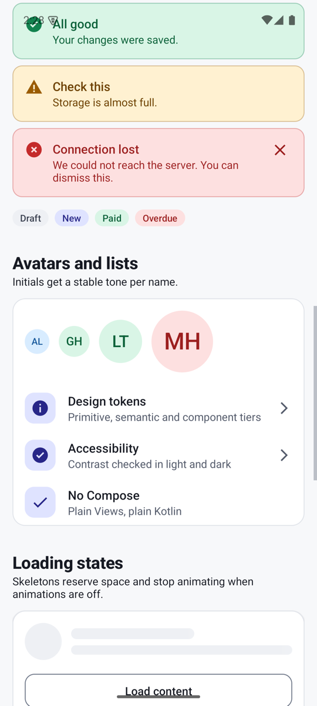

Design systems on Android · Series · Part 1 of 6
What a design system is, and a tour of a working one for Android
A design system is easy to admire and hard to build, because the finished product hides the decisions. This series builds one for Android in plain Views and Kotlin, with no Jetpack Compose, and points at real, running code for every claim. In this first part you will learn what a design system is made of, why teams build them, and how the working example is laid out so you can find your way around it.
Working code. Everything in this post exists and runs in the reference repository: github.com/liconrepo/MobileDesignSystem. Clone it and follow along; the docs are also published at liconrepo.github.io/MobileDesignSystem.
Files for this part:
In this part
- A design system is a shared language: tokens (named decisions), components (reusable parts) and guidance (when to use what).
- It pays off through consistency, speed and accessibility that is fixed once and inherited everywhere.
- Two ideas organise the example: functional vs perceptual patterns, and atoms to pages.
- The repo has a library module, a gallery app and a docs folder. You can run it in about five minutes.
What a design system actually is
Ask five people and you will get five answers: a Figma file, a component library, a style guide, a team. They are all pieces of the same thing. A useful working definition for engineers is:
Analogy. Think of a city's building code and its catalogue of approved parts. The code says how wide a door must be (rules). The catalogue offers doors that already comply (components). The measurements everyone agrees on, such as metres and standard sizes, are the tokens. A builder who uses them does not re-argue every decision, and the buildings still feel like one city.
In an app, that becomes three layers of material:
| Piece | What it is | Example in the repo |
|---|---|---|
| Tokens | Named design decisions: colours, spacing, radius, type sizes | mds_color_primary, mds_space_lg |
| Components | Reusable UI built from tokens | MdsButton, MdsTextField |
| Guidance | Principles and usage rules, written down | docs/principles.md, docs/components.md |
Without the third row you have a library, not a system. Rules like "one primary button per region" are what stop a good set of parts from producing an inconsistent product.
Why teams build one
- Consistency. Two screens written by two people on two different days still look like one product.
- Speed. Nobody rebuilds a button. Designers and developers discuss "a destructive button", not "a red rounded rectangle".
- One-place changes. A rebrand, a dark mode or a contrast fix is edited in one place and inherited by every screen.
- Accessibility by default. Touch-target size, focus, labels and announcements are built into the part, so every screen gets them for free.
It is not free. A system has a maintenance cost, a versioning story and a risk of becoming a bottleneck. The practical advice in this series is to keep it small: every component must justify itself, and the public surface stays deliberate.
Two ideas that organise the example
Functional and perceptual patterns
Alla Kholmatova's book Design Systems: A Practical Guide to Creating Design Languages for Digital Products (Smashing Magazine, 2017) separates two kinds of pattern. Functional patterns are about what something does: a button triggers an action, a text field collects text. Perceptual patterns are about how it feels: the corner radius, the type scale, the way a success message looks compared with an error. The book also argues for a shared vocabulary and for written, testable principles. This series paraphrases those ideas in its own words and does not reproduce the book.
In code, the split is practical. Perceptual decisions live in resource files (res/values) and a few helpers. Functional behaviour lives in Kotlin classes. A rebrand touches the first; a bug fix touches the second.
Atoms, molecules, organisms, templates, pages
Brad Frost's Atomic Design describes growing an interface from small parts to whole screens. The example library uses the same names for its packages, so a newcomer can predict where a file lives.
A tour of the working repo
Clone it and look around. Every later part of this series points back to files in here.
git clone https://github.com/liconrepo/MobileDesignSystem.git
cd MobileDesignSystem
./gradlew :sample:installDebug # run the gallery on a device or emulator
./gradlew :designsystem:test # unit testsYou need JDK 17 and the Android SDK (compileSdk 36, minSdk 24). The layout is:
MobileDesignSystem/
designsystem/ the library (what you would publish)
src/main/java/io/github/liconrepo/mds/
perceptual/ MdsTone, MdsMotion, theme helpers
functional/atoms/ MdsButton, MdsBadge, MdsChip, MdsAvatar, MdsSkeleton
functional/molecules/ MdsTextField, MdsAlert, MdsListItem
functional/organisms/ MdsCard
templates/ MdsScreenTemplate
src/main/res/
values/ palette, semantic colours, dimens, attrs, themes, type
values-night/ the dark-mode values
sample/ a gallery app that consumes the library
docs/ principles, tokens, theming, layers, component guidelines



Why a sample app belongs in the repo
A component you cannot see is a component you cannot trust. The gallery has one tab per layer, and the foundations tables (colours, type scale, spacing) are drawn from the live theme, so the documentation cannot drift away from the code. It is also the consumer-side test: if the sample is awkward to write, the API is wrong.
The ground rules this series follows
- Roles, not values. Code asks for "primary" or "danger", never for
#4040D8. - Never colour alone. Errors have an icon and a prefix, selected chips have a check mark.
- 48dp touch targets, even when the control looks smaller.
- Small public API. Kotlin's
explicitApi()is switched on, so nothing is public by accident. - Everything original. Colours, icons and code were written for this project from public documentation. It is not affiliated with any company, and the credits in the README name the public systems whose ideas informed it: Material Design, IBM Carbon, Shopify Polaris, GitHub Primer, Atlassian and Microsoft Fluent.
What comes next
| Part | You will learn |
|---|---|
| 2 | Tokens in three tiers, dark mode, and swapping brands |
| 3 | Building a themeable component, using the button |
| 4 | State and accessibility in the text field, chip and alert |
| 5 | Layers, and a screen template with named regions |
| 6 | Publishing, CI, docs, and the bugs I hit along the way |
Try it yourself
- Run the sample and flip dark mode and the Sunset brand. Notice what changes and what does not.
- Open
designsystem/src/main/res/values/mds_colors.xmland its twin invalues-night. Find the same name in both files. - Open
MdsButton.ktand search for a hex colour. There is not one.
| Term | In plain words |
|---|---|
| Design system | Tokens, components and guidance that a product team shares. |
| Token | A named design decision, such as a colour or a spacing step. |
| Component | A reusable UI part built from tokens. |
| Functional pattern | What a part does. |
| Perceptual pattern | How a part looks and feels. |
| Atom / molecule / organism | Small standalone part / atoms working as one unit / a whole section of a screen. |
| Template / page | A screen layout with no content / that layout filled with real content. |